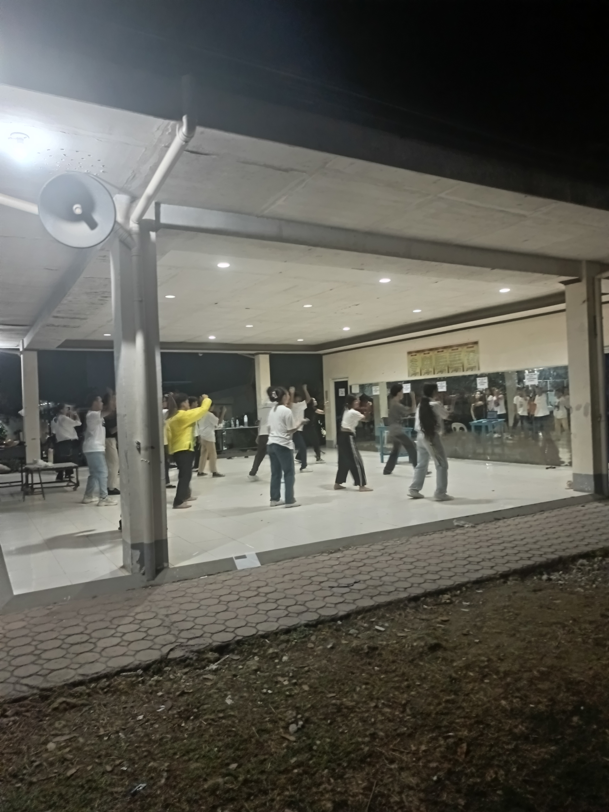

Exams
Preparing for exams is crucial for success in academic assessments. It helps students develop a deep understanding of the subject, enabling them to recall information more effectively during the exam. Early preparation reduces stress and increases confidence, allowing students to approach exams with a calm and focused mindset. Practice tests can provide insight into knowledge gaps, highlighting areas that require further attention. Consistency is key to mastering difficult topics, as repeated exposure helps reinforce learning. Additionally, organizing study material into manageable sections makes the preparation process more efficient. Utilizing study groups can also foster collaboration and new perspectives, enriching the learning experience. Ultimately, a well-structured study plan, combined with discipline and perseverance, greatly enhances the likelihood of achieving high scores.
| Tips |
Description |
| Prepare Early |
Start studying well in advance. |
| Practice Tests |
Use practice tests to gauge knowledge. |
| Stay Organized |
Keep study materials and notes in order to find information quickly. |
| Take Breaks |
Incorporate short breaks during study sessions to maintain focus. |
| Seek Help |
Don't hesitate to ask teachers or peers for clarification on difficult topics. |
Dance Practice

Dance practice helps improve coordination and rhythm, laying the foundation for mastering various styles. Consistent practice enables dancers to perfect their moves by building muscle memory and enhancing precision. Over time, the body becomes more flexible and responsive, allowing for smoother transitions and more expressive performances. Each dance style demands different skills and dedication, whether it’s the grace of ballet or the energy of hip hop. Regular practice ensures steady progress in skill development, as dancers gradually improve their technique and stamina. Moreover, practicing in front of mirrors helps dancers refine their posture and form. Setting achievable goals also motivates dancers to stay committed and track their improvements. Ultimately, dedication and passion are the driving forces behind true mastery in any dance form.
| Style |
Practice Time |
| Ballet |
20 minutes |
| Hip Hop |
40 minutes |
| Contemporary |
30 minutes |
Basketball Practice

Regular basketball practice enhances skills and teamwork, essential components for success on the court. Each drill targets a specific aspect of the game, ensuring well-rounded development. Shooting drills improve accuracy, helping players refine their technique and consistency. Defensive drills build stamina and resilience, preparing players for high-intensity moments in a game. Continuous practice leads to improvement in all areas, from ball handling to strategic positioning. Teamwork during practice fosters better coordination on the court, as players learn to anticipate each other’s movements and communicate effectively. Scrimmages provide valuable opportunities to apply learned skills in game-like scenarios, sharpening decision-making and adaptability. Ultimately, disciplined practice cultivates a strong sense of teamwork, enabling players to perform cohesively during matches.
| Skill |
Practice Focus |
| Shooting |
Technique |
| Defense |
Stamina |
| Passing |
Accuracy |
|
Dribbling |
Handling |